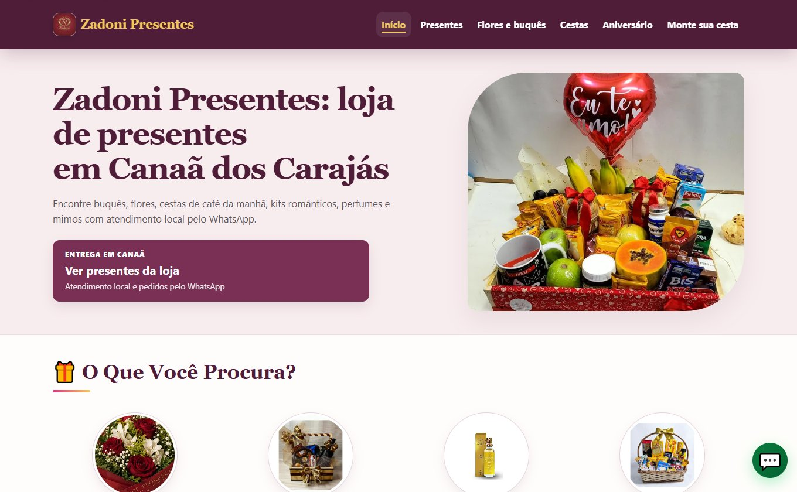
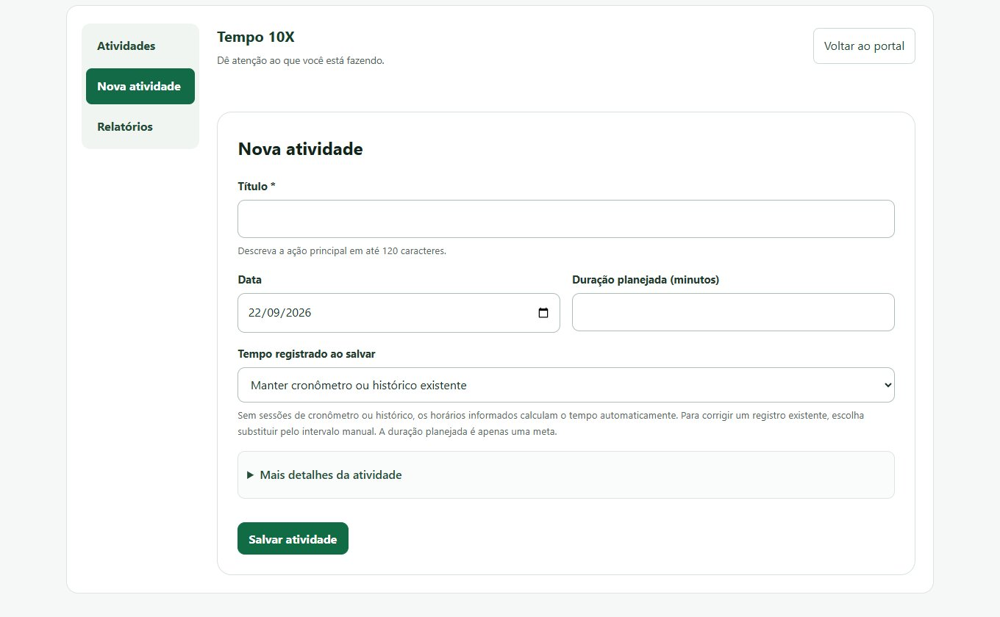
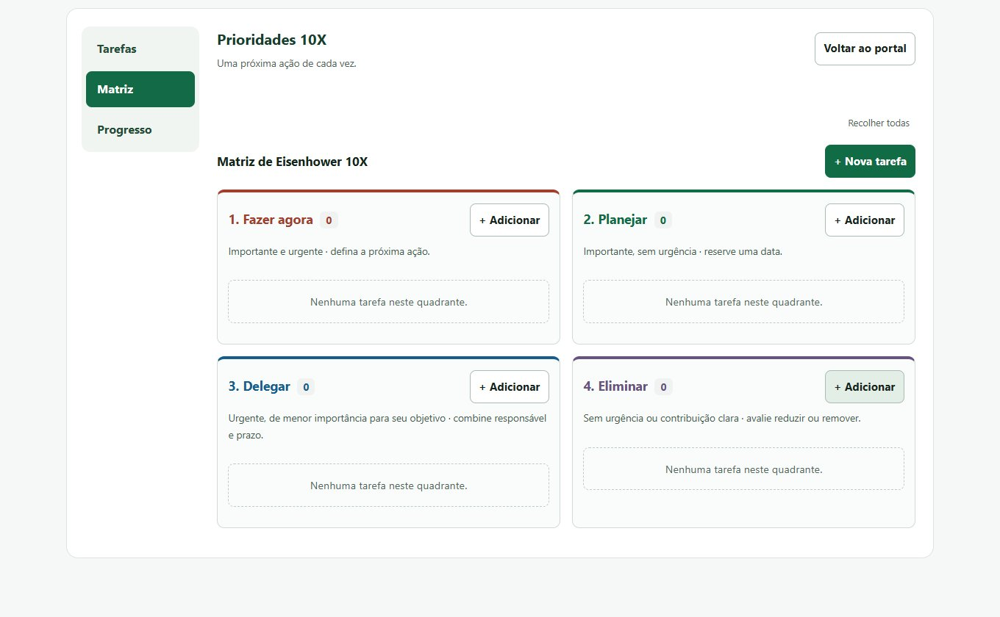

Clareza
Priorize com a Matriz Eisenhower e elimine o ruído: urgente vs. importante, sem culpa.
Zadoni Digital · Por Adonias Joshua
Ajudo sua empresa a organizar a presença no Google, no site e nos anúncios, com caminhos claros para o atendimento pelo WhatsApp.
Atendimento a negócios locais em Canaã dos Carajás
Projetos próprios

Zadoni PresentesNegócio próprio: site, produtos e presença digital local.Portal Zadoni DigitalConteúdo, ferramentas web e SEO.Não sabe por onde começar? Faça o diagnóstico inicial →
Conhecimento para aplicar
Explore os guias de produtividade, 5S, mineração e meio ambiente, use as ferramentas e conheça a Trilha 10X.
Da leitura à prática

Tempo 10XAcompanhe tempo e atividades.
Matriz de EisenhowerOrganize tarefas por prioridade.Quer conhecer a formação? A Trilha Produtividade 10X começa logo abaixo. Ver o curso ↓
Curso curto com certificação
Pare de perder tempo com desorganização, prioridades confusas e mensagens que não geram ação. Integre produtividade, fundamentos de educação ambiental para empresas e comunicação persuasiva em uma trilha prática.
Quero acessar a Trilha 10XQuando prioridades se misturam, boas práticas ambientais não viram rotina e a mensagem não engaja, o esforço aumenta e o resultado demora.
A Trilha 10X conecta produtividade, fundamentos de educação ambiental para empresas e comunicação persuasiva em uma formação prática.
Pagamento único
R$ 97
Sem mensalidade. Acesso vitalício + 2 certificados digitais + suporte com IA.
Inclui novos conteúdos e atualizações do curso.
Pagamento 100% seguro | 2 certificados digitais incluídos | Acesso imediato.
Descubra em menos de 2 minutos como o curso vai transformar sua produtividade.
Aprendizado visual, dinâmico com voz de Inteligência Artificial e voz humana.
As vídeo aulas do Combo 10X são curtas, leves e diretas ao ponto. Produzidas em estilo animado (Renderforest/Canva), combinam infográficos, personagens e histórias visuais.
Cada aula é narrada com uma voz dinâmica de Inteligência Artificial e também com voz humana, tornando o conteúdo mais envolvente e acessível para quem aprende de forma auditiva e visual.
O formato é pensado para quem tem pouco tempo e precisa de resultados rápidos:
• aulas rápidas de 5 a 10 minutos
• exemplos práticos e comparações simples
• quizzes curtos e exercícios guiados
• acesso vitalício às aulas e atualizações
O conteúdo aborda situações reais de construção, mineração, comércio e liderança, traduzindo conceitos de produtividade, meio ambiente nas empresas e 5S e comunicação persuasiva para o dia a dia.
Essa combinação de design animado + narração inteligente ajuda o aluno a entender rápido, aplicar com confiança e manter o foco até o fim da jornada.
Quero acessar a Trilha 10XTrês pilares que vão transformar sua rotina, sua produtividade e sua forma de se comunicar.
Aprenda técnicas práticas como Pomodoro e Matriz Eisenhower para eliminar a procrastinação e dominar o foco.
Saiba maisDescubra como o 5S aplicado em obras, comércios e na vida pessoal pode transformar organização em resultados.
Você vai dominar os principais temas de educação e gestão ambiental para uma liderança sustentável.
Saiba maisAprenda padrões de linguagem usados por líderes e empresas como Vale, Nissan e GE para influenciar com ética e confiança.
Saiba maisUm curso prático e certificado para quem precisa entregar mais com menos esforço: Vendedores, Consultores, Líderes e Empreendedores; profissionais de Construção, Mineração e Comércio; e também quem busca disciplina, liderança e comunicação no dia a dia.
Você aprende frameworks simples (como Matriz Eisenhower e Técnica Pomodoro), aplica 5S na rotina pessoal e no trabalho, domina padrões de linguagem persuasiva para resolver conflitos e influenciar com ética.
Transformar clareza em ação, e ação em resultados — com ritmo, foco e ferramentas digitais gratuitas.

Com mais de uma década de experiência em meio ambiente, segurança e produtividade industrial, Adonias Silva construiu sua carreira em alguns dos maiores projetos do Brasil, atuando ao lado de empresas nacionais e multinacionais como Vale, Pöyry, Enesa Engenharia, MIP Engenharia, Plamont, ETI, CR Almeida e Sarens — líder mundial em engenharia de içamento e transporte pesado.
Em obras de grande porte nos setores de mineração, construção e montagem mecânica, Adonias viveu os desafios reais do campo: pressão por resultados, riscos ambientais, prazos curtos e a busca constante por excelência. Essas experiências moldaram não só sua competência técnica, mas também uma visão humana e estratégica sobre gestão, liderança e transformação profissional.
Com o tempo, decidiu unir toda essa vivência prática ao poder da tecnologia — tornando-se um criador Fullstack especializado em Inteligência Artificial e automação de processos. Hoje, desenvolve soluções que unem sustentabilidade, produtividade e transformação digital, ajudando empresas e profissionais a se tornarem mais eficientes, organizados e conscientes.
Como fundador do Combo Produtividade 10X + 5S + Comunicação Persuasiva, Adonias compartilha as mesmas metodologias usadas por Vale, Honda, Nissan, General Electric e Sarens, adaptadas para a realidade de quem busca crescer como líder, consultor, vendedor ou empreendedor. Com aulas curtas, quizzes, gamificação e suporte via IA, o método 10X ajuda pessoas a superarem a procrastinação e aplicarem o 5S e as técnicas de comunicação persuasiva em todas as áreas da vida — profissional e pessoal.
O que antes era apenas uma jornada de superação tornou-se uma missão: ajudar pessoas comuns a viverem e trabalharem em seu mais alto potencial.
Quero acessar a Trilha 10XPriorize com a Matriz Eisenhower e elimine o ruído: urgente vs. importante, sem culpa.
Cadência com Técnica Pomodoro, rotinas 5S e checklists aplicáveis na obra, na mina, no comércio e em casa.
Comunicação persuasiva com princípios de Cialdini, linguagem Ericksoniana e técnicas de Persuasão Indireta.
Aplicação direta em construção, mineração, comércio e vida pessoal. Ordene, padronize e mantenha com 5S.
Estratégias de linguagem que aumentam a clareza, reduzem conflitos e geram colaboração.
Rotinas com Trello, Todoist e ClickUp para estruturar rotinas e acelerar as entregas.
Veja os resultados reais de quem colocou em prática.
Encarregado de Obras
“Em apenas 20 dias, consegui organizar minha rotina e multiplicar minha produtividade.”
Engenheira de Produção
“As técnicas do Combo 10X me ajudaram a liderar com mais clareza e reduzir o estresse da equipe.”
Técnico de Manutenção
“Aprendi o método 5S e uso até em casa! Mudou minha forma de trabalhar e viver.”
Supervisora de Montagem
“Nunca pensei que produtividade pudesse ser tão simples. O curso é prático e direto.”
Ao longo das aulas curtas e dinâmicas, você será direcionado a realizar quizzes para consolidar o conhecimento.
Tire dúvidas e aprofunde conceitos como Eisenhower, Pomodoro, 5S e Persuasão com um assistente de IA integrado ao curso.
Inscreva-se agora e aplique o método ainda hoje.
Quero começar por R$ 97